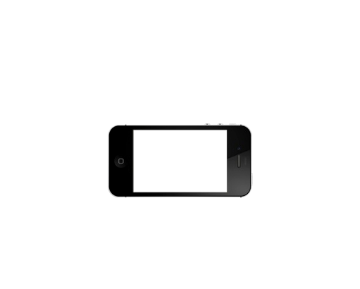
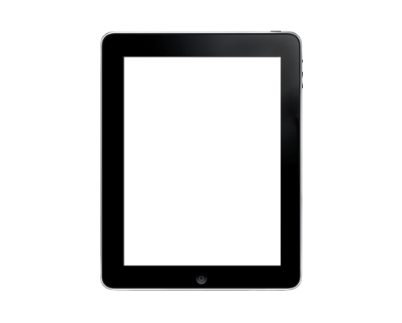
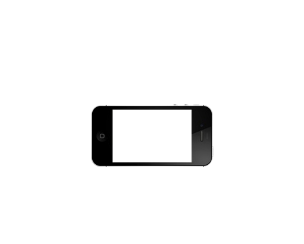
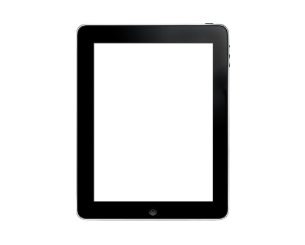
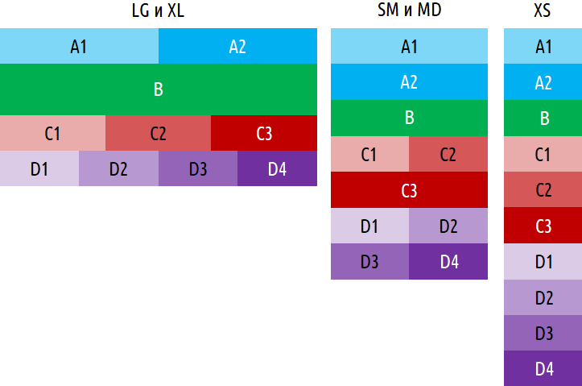

Extra small
<576px

Small
≥576px

Medium
≥768px

Large
≥992px

Extra large
≥1200px
Максимальная
ширина контейнера
None (auto)
540px
720px
960px
1140px
Префикс класса
col-*
col-sm-*
col-md-*
col-lg-*
col-xl-*
В Bootstrap 4 используются следующие идентификаторы размеров:
|
|
 |
 |
|
| |
|
Максимальная |
None (auto) |
540px |
720px |
960px |
1140px |
|
Префикс класса |
col-* |
col-sm-* |
col-md-* |
col-lg-* |
col-xl-* |
Где вместо звездочки задается ширина колонки в количестве "элементарных столцов", число корторых в Bootstrap 4, так же как и в Bootstrap 3, фиксировано, и составляет 12 столбцов в одном контентном блоке.
Для каждого идентификатора размера считается, что количество колонок в данном размере - 12 штук. Правила верстки сделаны так, что они распространяются на указанный размер экрана и выше, если не указано другое. Для более мелких идентификаторов размеров, если не специализировано иное, считается, что ширина блока 12 колонок. Именно поэтому, блоки на экранов мелких размеров выстраиваются "в столбик" по вертикали.
Совершенно обычным делом считается подход, когда суммарное количество столбцов в блоках. размещенных в одной строке row, больше чем 12. Тогда колонки, занимаемые столбцы после 12-го, будут отображаться с новой строки.
Пример верстки макета:

<section class="a">
<div class="container">
<div class="row">
<div class="a1 col-lg-6">A1</div>
<div class="a2 col-lg-6">A2</div>
</div>
</div>
</section>
<section class="b">
<div class="container">
B
</div>
</section>
<section class="c">
<div class="container">
<div class="row">
<div class="c1 col-sm-6 col-lg-4">C1</div>
<div class="c2 col-sm-6 col-lg-4">C2</div>
<div class="c3 col-lg-4">C3</div>
</div>
</div>
</section>
<section class="d">
<div class="container">
<div class="row">
<div class="d1 col-sm-6 col-lg-3">D1</div>
<div class="d2 col-sm-6 col-lg-3">D2</div>
<div class="d3 col-sm-6 col-lg-3">D3</div>
<div class="d4 col-sm-6 col-lg-3">D4</div>
</div>
</div>
</section>
Автоматическая ширина ячеек
Если колонка прописывается с классом col (без тире и числа столбцов), то ширина колонки расчитывается автоматически так, чтобы она занимала максимально возможное свободное место. Например:
<div class="row>
<div class="col">1</div>
<div class="col">2</div>
<div class="col">3</div>
</div>
Данный код покажет строку из трех равноширинных ячеек.
Иногда стоит немного другая задача - выделить под ширину ячейки столько, сколько занимает контент ячейки. Для это можно воспользоваться классом вида col-sm-auto.
Размещение ячеек по центру строки
Иногда необходимо разместить ячейку по центру строки. Делается это путем указания специального класса выравнивания вида justify-content-sm-center для блока row, вот так:
<div class="row justify-content-sm-center">
<div class="col-md-2">
Тут текст
</div>
</div>
То есть, все колонки в теге с классом row и дополнительным классом выравнивания, будут выровнены по центру. Если колонок несколько, то по центру будет выровнена вся группа колонок вместе (а не каждая колонка по отдельности, естественно).